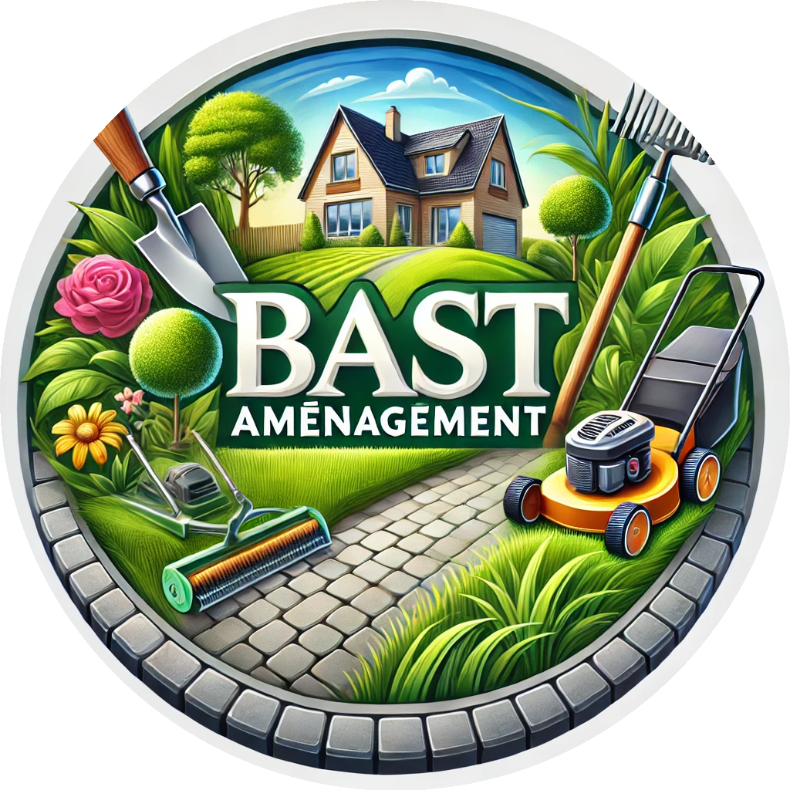

Pavage & dallage
Allées, accès, cours, terrasses et abords de maison avec une finition propre et durable.

BAST AMÉNAGEMENTCréation & entretien d’espaces extérieurs
Parce qu'un beau jardin demande de l'attention, nous réalisons l'entretien de vos espaces verts ainsi que divers aménagements extérieurs adaptés à vos besoins.

Nos prestations
Allées, accès, cours, terrasses et abords de maison avec une finition propre et durable.
Création, amélioration et entretien d’espaces verts adaptés à votre terrain.
Pose de clôtures pour sécuriser, délimiter ou structurer vos extérieurs.
Murets, bordures, escaliers, petites réparations et finitions extérieures.
Notre approche
Chaque projet est étudié selon votre terrain, vos besoins et le rendu souhaité. L’objectif est simple : obtenir un aménagement extérieur esthétique, pratique et durable dans le temps.
Réalisations

Réalisation d’une terrasse extérieure sur plots.


Aménagement et entretien des abords de maison.


Préparation, toile anti-racine et plantations.


Entretien, plantations et mise en valeur du jardin.


Pose et finition d’un revêtement extérieur.


Entretien d’arbustes, haies et espaces verts.


Entretien et remise en forme d’une haie.


Taille et entretien d’une haie de jardin.


Travaux d’allée, joints, tranchée et parterre.


Empierrement, pavage et finitions extérieures.


N'hésitez pas à nous contacter pour en discuter.
Demander un devis gratuit